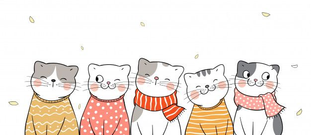

En nuestra galería de fotos de gatos en adopción, te presentamos a una maravillosa colección de felinos que están ansiosos por encontrar un lugar donde puedan ser amados y cuidados. Cada uno de estos gatos tiene una historia única y una personalidad especial que los hace dignos de un hogar lleno de cariño.
Con su pelaje blanco y esponjoso, este gatito te recordará a un pequeño copo de nieve. Siempre está listo para una sesión de juego, persiguiendo plumas y persiguiendo pelotas por toda la casa. Su energía y entusiasmo son contagiosos.
Mas informacioncamilo Siempre parece aparecer de la nada, como una sombra silenciosa. Su pelaje gris plateado le permite camuflarse fácilmente en cualquier entorno, Cata de pelaje atigrado parece estar listo para cualquier tipo de aventura. Siempre está dispuesto a explorar nuevos lugares y descubrir rincones desconocidos.
Mas informacion
Cada vez que este gato se acurruca, su ronroneo suave suena como una melodía tranquilizadora. Con su pelaje suave como el terciopelo y su naturaleza cariñosa, es el compañero perfecto para momentos de relajación y tranquilidad
Mas informacionCon su pelaje negro como la noche y ojos amarillos centelleantes, este gato parece un misterioso acechador de las sombras. A pesar de su aire de misterio, le encanta recibir caricias y se relaja en tu regazo como si estuviera en su trono real.
Mas informacionSu pelaje mezcla de colores te recordará a las alas de una mariposa. Es curioso por naturaleza y examina cada rincón de su entorno. Siempre está listo para investigar y descubrir nuevas aventuras en su hogar.
Mas informacionEste gato es un verdadero artista en el arte de saltar y trepar. Con su agilidad asombrosa, es capaz de alcanzar lugares que otros gatos solo pueden soñar. Su pelaje moteado y sus ojos curiosos reflejan su espíritu aventurero.
Mas informacionCon su porte regio y pelaje atigrado, esta gata parece haber sido criada en la realeza felina. Aunque a veces puede parecer distante, cuando te ganes su confianza, te mostrará su lado cariñoso y te seguirá por todas partes.
Mas informacion